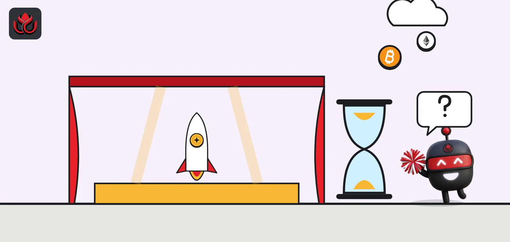
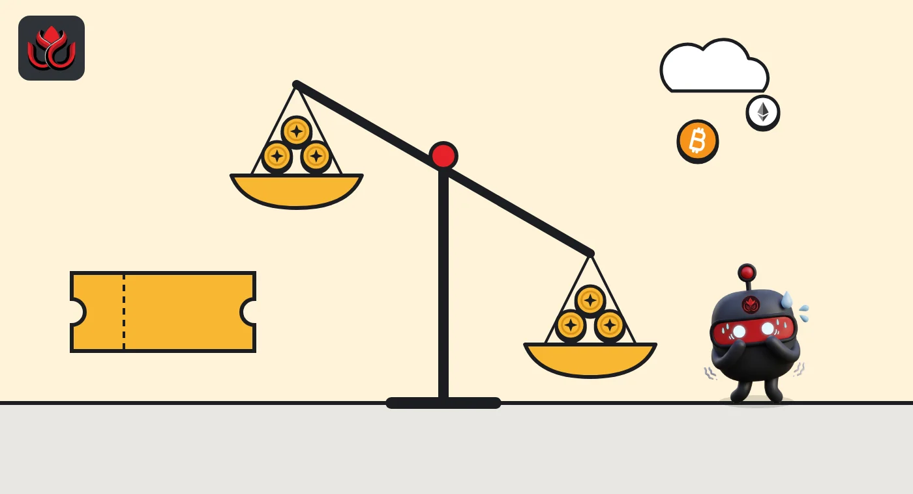
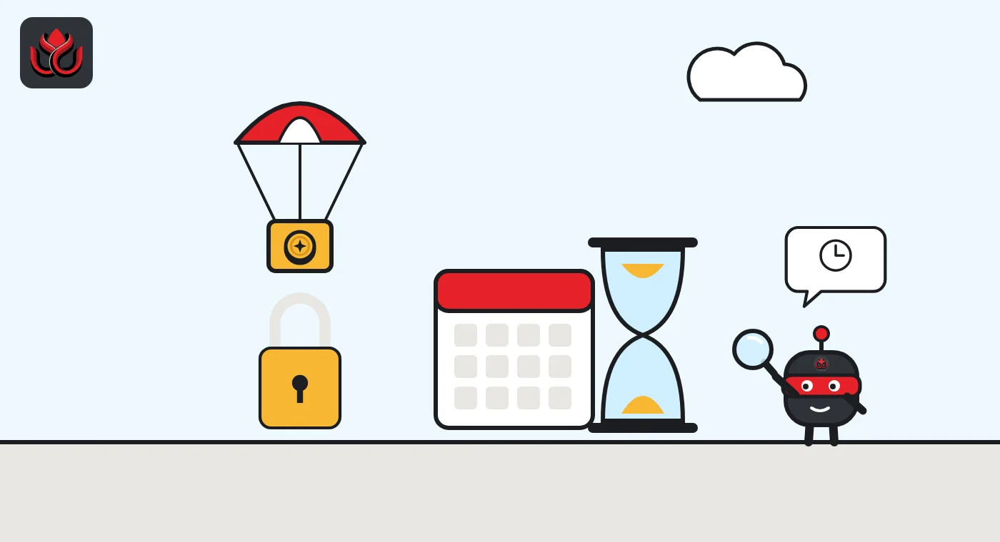

PREDICT sale done, trading on hold: Binance postpones Predict.fun's launch, no new date
The BNB Chain prediction market sold PREDICT on Binance Wallet on October 29, then Binance Alpha and spot trading were postponed hours before launch. The airdrop claim is frozen too, and nobody has said why.

Key points
- Predict.fun sold PREDICT on Binance Wallet on October 29, 2026, but Binance postponed Alpha and spot trading set for October 30, with no new date or reason.
- The Season 1 airdrop of 70 million PREDICT (7% of 1 billion) is delayed too. Claimers will choose 35% at once or 100% over 12 months.
- Watch for fake claim pages: Predict.fun says news only comes from its verified accounts and Discord.
What happened
Predict.fun's PREDICT token was sold to buyers on Binance Wallet on October 29, 2026, but its trading debut, set for the next morning, has been postponed with no new date. Predict.fun, a prediction market on BNB Smart Chain, was due to list on Binance Alpha at 5:00 a.m. ET on October 30, Binance Wallet said. Binance Alpha is a section of Binance's wallet for early-stage tokens. A day earlier, Predict.fun had run a Pre-TGE Prime Sale on Binance Wallet from 4:00 to 6:00 a.m. ET.
Then Binance Wallet posted that PREDICT Alpha trading had been postponed and said a new start time would come in an official announcement. Predict.fun followed. It said its token generation event (TGE, the moment a token is created and starts circulating) and its Season 1 airdrop claim were delayed in line with the postponement of Binance Alpha and spot trading.
Predict.fun apologized and said it will announce the revised claim date "as soon as there is confirmation." As of November 2, 2026, we found no new date. Neither company gave a reason for the delay.
What Predict.fun does
Predict.fun lets users buy shares in the outcome of events in sports, economics, culture and crypto. Share prices act as the market's estimate of how likely an outcome is, and a correct share pays out a fixed amount when the market settles. The project describes itself as powering prediction markets on Binance, and Binance Wallet promotes live markets through its Prediction Markets feature.
Predict.fun says it combines prediction markets with DeFi, so that users can earn yield on capital while it sits in open positions.
DefiLlama lists a strategic round on April 2, 2026, backed by YZi Labs and Susquehanna, with no amount disclosed. On DefiLlama data checked on November 2, 2026, the platform shows about $2.8 billion in cumulative volume, $225.66 million over the past 30 days, $15.22 million in cumulative fees and about $1.03 million in revenue over 30 days. Almost all of its value locked (99.7%) is on BNB Chain.

Timeline
Strategic round with YZi Labs and Susquehanna, amount not disclosed (DefiLlama)
Predict.fun publishes PREDICT tokenomics and announces the Prime Sale
PREDICT Prime Sale on Binance Wallet
Final Season 1 points published; Binance Wallet sets Alpha trading for October 30
Binance Wallet postpones Alpha trading; Predict.fun delays TGE and airdrop claim
Original Binance Alpha start time, not met
How the 1 billion tokens are split
PREDICT has a fixed supply of 1 billion tokens, according to Predict.fun's tokenomics post. The split is 51.95% for ecosystem and community, 26.05% for early backers, 10% for core contributors, 8% for the treasury and 4% for liquidity.
At TGE, 16% of supply, or 160 million tokens, is set to unlock. Core contributor and early backer tokens are fully locked at launch, then face a 24-month cliff (a period with no unlocks) followed by 36 months of monthly vesting. The whole supply unlocks over five years under the current schedule.
Predict.fun did not publish the Prime Sale price or the number of tokens sold in its own posts, so we leave those figures out.
PREDICT token allocation
% of 1 billion supply
Source: Predict.fun on X, Introducing $PREDICT (October 28, 2026)

The airdrop choice: 35% now or 100% later
The Season 1 airdrop is 70 million PREDICT, or 7% of supply, taken from the ecosystem and community bucket. It goes to users who earned Predict Points by trading, providing liquidity or joining community activities. Predict.fun published final Season 1 points on October 29.
Recipients get a choice on claim day, Predict.fun said:
- Instant claim: take 35% of the allocation now and give up the rest.
- 12-month vest: receive 100% of the allocation over 12 months.
Users who pick the vest can switch to the instant claim within one month of TGE. Eligible users have one month from the opening of claims to choose, after which unclaimed tokens are forfeited. Because the claim is delayed, those windows have not started.
The risks for buyers and claimers
- No trading date. Prime Sale buyers and airdrop claimers cannot trade until a new schedule is published.
- Unclear cause. Neither Binance Wallet nor Predict.fun has said why trading was postponed.
- Fake claim pages. Delays draw scammers. Predict.fun says official news comes only from its verified social accounts and Discord.
- Falling liquidity. DefiLlama shows total value locked of about $10.54 million, down 43.9% in 30 days.
LC Insight analysis
This section is our reading of the facts above, not a statement of fact.
- We think the airdrop design is the real story for holders. Taking 35% now or waiting a year for 100% splits the community into quick sellers and patient holders, which softens launch-day selling but spreads supply over the next 12 months.
- With about $1 million of 30-day revenue and only 16% of supply unlocking at launch, PREDICT's opening price will depend far more on Binance's reach than on what the platform earns.
- A delay with no reason given breeds caution. Prediction markets are still hot, but PREDICT's first trading days will now open under much closer scrutiny.
What's next
- A new Alpha, spot and claim date from Binance Wallet and Predict.fun
- Whether the 16% TGE unlock changes at the rescheduled launch
- Any reason given for the postponement
Disclaimer. This article is based on public information and the sources listed below as of the update time shown. It is for information only and is not investment, legal or tax advice. Figures may change as companies and authorities publish new data.
Sources
- Predict.fun on X, Introducing $PREDICT (October 28, 2026)
- Predict.fun on X, Prime Sale on Binance Wallet (October 28, 2026)
- Predict.fun on X, TGE and airdrop claim delayed (October 30, 2026)
- Binance Wallet on X, PREDICT Alpha trading time (October 29, 2026)
- Binance Wallet on X, PREDICT Alpha trading postponed (October 30, 2026)
- Predict.fun on X, final Season 1 points (October 29, 2026)
- DefiLlama, Predict Fun protocol metrics